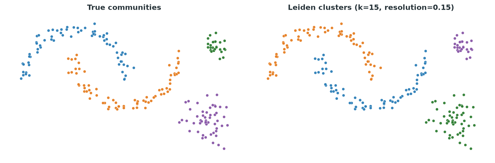

2 Leiden with R and Python
This chapter applies Leiden to simulated data with a known grouping. The examples use established R and Python packages rather than reimplementing the algorithm. Because the correct grouping is known, we can see how each setting changes the result.
2.1 Setup
The R examples use igraph 2.3.1 for graphs and Leiden, bluster 1.20.0 for neighbour graphs, mclust for the adjusted Rand index, and Seurat 5.5.1 for a single cell workflow.
The Python examples use igraph 1.0.0, leidenalg 0.12.0, sklearn 1.9.1 for neighbour search and ARI, and scanpy 1.11.5 for a single cell workflow.
R’s igraph::cluster_leiden() and Python’s igraph.Graph.community_leiden() call the same underlying C library. Their main arguments and defaults match, except for automatic use of edge weights. R uses an edge attribute named weight when it is present. Python requires the attribute name or values to be passed through weights.
Python’s leidenalg.find_partition() is a separate interface. It takes a partition class and uses resolution_parameter rather than resolution. Scanpy 1.11.5 can use either leidenalg or igraph as its backend, so this chapter shows both Python interfaces.
2.2 Check agreement with ARI
The adjusted Rand index, or ARI, measures agreement between two groupings of the same observations. It compares whether pairs of observations are kept together or placed apart, then corrects for agreement expected by chance. An ARI of \(1\) means perfect agreement. A value near \(0\) means the agreement is close to chance. Group numbers do not need to match because ARI compares the grouping, not the labels assigned to it.
2.3 Load the data
The dataset contains 220 points in two dimensions. Its four groups are two interleaved crescents, one small dense group, and one larger loose group. The same data appear in Chapter 1 at Figure 1.1. They were generated once with a fixed seed and saved in data/leiden_demo.csv, so R and Python use identical observations and labels.
Keep the downloaded CSV files inside a folder named data when following the examples.
demo <- read.csv("data/leiden_demo.csv")
dim(demo)
head(demo, 3)
table(demo$true_community)[1] 220 4
id x y true_community
1 1 1.986200 -0.4189657 crescent_2
2 2 4.509723 1.5924648 dense_blob
3 3 2.714331 0.3573930 crescent_2
crescent_1 crescent_2 dense_blob loose_blob
70 70 28 52import numpy as np
import pandas as pd
demo = pd.read_csv("data/leiden_demo.csv")
print(demo.shape)
print(demo.head(3))
print(demo["true_community"].value_counts())(220, 4)
id x y true_community
0 1 1.986200 -0.418966 crescent_2
1 2 4.509723 1.592465 dense_blob
2 3 2.714331 0.357393 crescent_2
true_community
crescent_2 70
crescent_1 70
loose_blob 52
dense_blob 28
Name: count, dtype: int64The true_community column is used only for evaluation. Leiden receives the x and y coordinates after they have been converted to a graph.
2.4 Build a neighbour graph
We construct a nearest neighbour graph with \(k = 15\). Both examples use package functions for the neighbour search.
library(igraph)
library(bluster)
X <- as.matrix(demo[, c("x", "y")])
g <- makeKNNGraph(X, k = 15)
vcount(g)
ecount(g)
is_directed(g)[1] 220
[1] 1925
[1] FALSEimport igraph as ig
from sklearn.neighbors import kneighbors_graph
X = demo[["x", "y"]].to_numpy()
def knn_graph(X, k):
adjacency = kneighbors_graph(X, n_neighbors=k, mode="connectivity")
adjacency = adjacency.maximum(adjacency.T).astype("int64")
return ig.Graph.Adjacency(adjacency, mode="undirected")
g = knn_graph(X, k=15)
print(g.vcount(), g.ecount(), g.is_directed())220 1925 Falsebluster::makeKNNGraph() returns an igraph graph directly. In Python, kneighbors_graph() returns a sparse adjacency matrix and igraph.Graph.Adjacency() converts it to a graph. The call to maximum() keeps an edge when either point selected the other as a neighbour. Both routes produce 220 nodes and 1925 undirected edges.
2.5 Fit Leiden
We use a modularity objective and resolution \(0.15\). The next two sections examine this choice.
set.seed(42)
part <- cluster_leiden(g, objective_function = "modularity",
resolution = 0.15, n_iterations = 2)
length(unique(membership(part)))
table(membership(part))[1] 4
1 2 3 4
70 28 52 70import leidenalg as la
part = la.find_partition(g, la.RBConfigurationVertexPartition,
resolution_parameter=0.15, seed=42)
print(len(set(part.membership)))
print(pd.Series(part.membership).value_counts().sort_index())4
0 70
1 70
2 52
3 28
Name: count, dtype: int64Both languages recover four clusters of sizes 70, 70, 52, and 28, matching the four true communities exactly, though the two languages number the clusters differently. Now compare against the truth with the adjusted Rand index.
library(mclust)
adjustedRandIndex(membership(part), demo$true_community)[1] 1from sklearn.metrics import adjusted_rand_score
adjusted_rand_score(demo["true_community"], part.membership)1.0An ARI of \(1\) confirms that the fitted grouping matches the known grouping. The cluster numbers can differ without changing the ARI.

2.6 Tune the resolution
Chapter 1 showed this comparison visually in Figure 1.12. Here we record the number of clusters and the ARI at each resolution.
res_values <- c(0.02, 0.05, 0.15, 0.5, 1.0)
res_sweep <- data.frame(resolution = res_values, n_clusters = NA_integer_, ARI = NA_real_)
for (i in seq_along(res_values)) {
set.seed(42)
p <- cluster_leiden(g, objective_function = "modularity",
resolution = res_values[i], n_iterations = 2)
res_sweep$n_clusters[i] <- length(unique(membership(p)))
res_sweep$ARI[i] <- round(adjustedRandIndex(membership(p), demo$true_community), 4)
}
res_sweep resolution n_clusters ARI
1 0.02 3 0.5835
2 0.05 3 0.5835
3 0.15 4 1.0000
4 0.50 6 0.7087
5 1.00 7 0.6582rows = []
for res in [0.02, 0.05, 0.15, 0.5, 1.0]:
p = la.find_partition(g, la.RBConfigurationVertexPartition,
resolution_parameter=res, seed=42)
lab = p.membership
rows.append({"resolution": res, "n_clusters": len(set(lab)),
"ARI": round(adjusted_rand_score(demo["true_community"], lab), 4)})
pd.DataFrame(rows) resolution n_clusters ARI
0 0.02 2 0.3495
1 0.05 3 0.8119
2 0.15 4 1.0000
3 0.50 6 0.7278
4 1.00 8 0.6089Both languages show the same pattern. Low resolutions merge groups. Resolution \(0.15\) recovers the known grouping. Higher resolutions split it into smaller clusters. R and Python differ at some settings because igraph and leidenalg use different optimizers. The sweep matters more than any one count. With real data, a known grouping is rarely available to select the resolution.
Resolution \(1.0\) gives 7 or 8 clusters here and splits the four known groups. A default is not tuned to a particular dataset or graph.
2.7 Tune the neighbour count
We now hold the resolution at \(0.15\) and vary the number of neighbours used to build the graph.
k_values <- c(3, 5, 8, 10, 15, 20, 30, 50)
k_sweep <- data.frame(k = k_values, n_edges = NA_integer_,
n_clusters = NA_integer_, ARI = NA_real_)
for (i in seq_along(k_values)) {
gk <- makeKNNGraph(X, k = k_values[i])
set.seed(42)
p <- cluster_leiden(gk, objective_function = "modularity",
resolution = 0.15, n_iterations = 2)
k_sweep$n_edges[i] <- ecount(gk)
k_sweep$n_clusters[i] <- length(unique(membership(p)))
k_sweep$ARI[i] <- round(adjustedRandIndex(membership(p), demo$true_community), 4)
}
k_sweep k n_edges n_clusters ARI
1 3 423 11 0.5627
2 5 676 7 0.6722
3 8 1058 5 0.8634
4 10 1289 5 0.8634
5 15 1925 4 1.0000
6 20 2549 4 1.0000
7 30 3767 3 0.5681
8 50 6271 2 0.3776rows = []
for k in [3, 5, 8, 10, 15, 20, 30, 50]:
gk = knn_graph(X, k)
p = la.find_partition(gk, la.RBConfigurationVertexPartition,
resolution_parameter=0.15, seed=42)
lab = p.membership
rows.append({"k": k, "n_edges": gk.ecount(), "n_clusters": len(set(lab)),
"ARI": round(adjusted_rand_score(demo["true_community"], lab), 4)})
pd.DataFrame(rows) k n_edges n_clusters ARI
0 3 423 11 0.5627
1 5 676 7 0.6722
2 8 1058 5 0.8634
3 10 1289 5 0.8634
4 15 1925 4 1.0000
5 20 2549 3 0.8119
6 30 3767 3 0.5681
7 50 6271 2 0.3776With \(k=3\) or \(5\), the graph is sparse and Leiden produces too many clusters. Both languages recover the known grouping around \(k=15\). Larger values add connections between groups and clusters begin to merge. At \(k=20\), R still recovers four groups while Python merges two of them. The R and Python graphs have the same edge list, so this difference comes from the optimizers.
The neighbour count changes the graph itself. Across this sweep, the edge count changes from 423 to 6271. Resolution leaves the graph unchanged and changes only its partition. The two parameters therefore need separate checks.
2.8 Add edge weights
makeKNNGraph() produces an unweighted graph. makeSNNGraph() builds a shared neighbour graph with Jaccard weights, as shown in Chapter 1 at Figure 1.6. The Python example uses a Gaussian weight based on distance. These are different weighting methods, but both show how weights can change a partition.
g_unw <- makeKNNGraph(X, k = 20)
g_w <- makeSNNGraph(X, k = 20, type = "jaccard")
set.seed(42)
p_unw <- cluster_leiden(g_unw, objective_function = "modularity",
resolution = 0.05, n_iterations = 2)
set.seed(42)
p_w <- cluster_leiden(g_w, objective_function = "modularity",
resolution = 0.05, n_iterations = 2)
cat("unweighted:", length(unique(membership(p_unw))), "clusters, ARI =",
round(adjustedRandIndex(membership(p_unw), demo$true_community), 4), "\n")
cat("weighted (SNN):", length(unique(membership(p_w))), "clusters, ARI =",
round(adjustedRandIndex(membership(p_w), demo$true_community), 4), "\n")unweighted: 2 clusters, ARI = 0.3495
weighted (SNN): 3 clusters, ARI = 0.5835def weighted_knn_graph(X, k):
distances = kneighbors_graph(X, n_neighbors=k, mode="distance")
sigma = np.median(distances.data)
distances = distances.maximum(distances.T)
distances.data = np.exp(-distances.data**2 / (2 * sigma**2))
return ig.Graph.Weighted_Adjacency(distances, mode="undirected")
g_unw = knn_graph(X, 20)
g_w = weighted_knn_graph(X, 20)
p_unw = la.find_partition(g_unw, la.RBConfigurationVertexPartition,
resolution_parameter=0.1, seed=42)
p_w = la.find_partition(g_w, la.RBConfigurationVertexPartition,
resolution_parameter=0.1, weights="weight", seed=42)
print("unweighted:", len(set(p_unw.membership)), "clusters, ARI =",
round(adjusted_rand_score(demo["true_community"], p_unw.membership), 4))
print("weighted:", len(set(p_w.membership)), "clusters, ARI =",
round(adjusted_rand_score(demo["true_community"], p_w.membership), 4))unweighted: 3 clusters, ARI = 0.8119
weighted: 4 clusters, ARI = 1.0Weights change the clustering in both examples and improve the ARI at the settings shown. The results are not directly comparable. R uses Jaccard overlap and Python uses a Gaussian function of distance, so their resolution values are also different.
weights and use_weights
In R, weights = NULL uses a graph attribute named weight when one exists. Passing weights = NA forces an unweighted run. In both Python interfaces, weights must be passed explicitly. An attribute can be selected with weights="weight".
2.9 Check stability across seeds
Leiden uses randomness during refinement. We fit the same graph ten times and change only the seed. Resolution \(0.5\) makes the variation easy to see.
seed_labels <- list()
for (seed in 0:9) {
set.seed(seed)
p <- cluster_leiden(g, objective_function = "modularity",
resolution = 0.5, n_iterations = 2)
seed_labels[[as.character(seed)]] <- membership(p)
}
sapply(seed_labels, function(m) length(unique(m)))
sapply(seed_labels[-1], function(m) round(adjustedRandIndex(m, seed_labels[["0"]]), 4)) 0 1 2 3 4 5 6 7 8 9
6 6 6 6 6 6 6 6 6 6
1 2 3 4 5 6 7 8 9
1.0000 1.0000 1.0000 1.0000 1.0000 0.8923 1.0000 1.0000 0.9898seed_labels = []
for seed in range(10):
p = la.find_partition(g, la.RBConfigurationVertexPartition,
resolution_parameter=0.5, seed=seed)
seed_labels.append(p.membership)
[len(set(lab)) for lab in seed_labels]
[round(adjusted_rand_score(seed_labels[0], lab), 4) for lab in seed_labels[1:]][6, 6, 6, 6, 6, 6, 6, 6, 6, 6]
[0.8923, 0.8923, 0.8923, 1.0, 0.8923, 0.8923, 0.8923, 0.8348, 0.8923]Every run finds six clusters, but some observations change clusters. Agreement with the first run ranges from about \(0.83\) to \(1.0\). A stable cluster count shows that the optimizer repeatedly finds similar partitions for this graph and resolution. It does not establish that the clusters are scientifically meaningful.
2.10 Compare CPM and modularity
Chapter 3 derives the CPM and modularity objectives. The package defaults differ.
set.seed(42)
p_cpm <- cluster_leiden(g, objective_function = "CPM", resolution = 0.15, n_iterations = 2)
set.seed(42)
p_mod <- cluster_leiden(g, objective_function = "modularity", resolution = 1.0, n_iterations = 2)
cat("CPM (resolution 0.15):", length(unique(membership(p_cpm))), "clusters, ARI =",
round(adjustedRandIndex(membership(p_cpm), demo$true_community), 4), "\n")
cat("modularity (resolution 1):", length(unique(membership(p_mod))), "clusters, ARI =",
round(adjustedRandIndex(membership(p_mod), demo$true_community), 4), "\n")CPM (resolution 0.15): 9 clusters, ARI = 0.5698
modularity (resolution 1): 7 clusters, ARI = 0.6582p_cpm = la.find_partition(g, la.CPMVertexPartition, resolution_parameter=0.15, seed=42)
p_mod = la.find_partition(g, la.ModularityVertexPartition, seed=42)
print("CPM (resolution 0.15):", len(set(p_cpm.membership)), "clusters, ARI =",
round(adjusted_rand_score(demo["true_community"], p_cpm.membership), 4))
print("modularity (no resolution):", len(set(p_mod.membership)), "clusters, ARI =",
round(adjusted_rand_score(demo["true_community"], p_mod.membership), 4))CPM (resolution 0.15): 10 clusters, ARI = 0.5362
modularity (no resolution): 8 clusters, ARI = 0.6089leidenalg.ModularityVertexPartition implements classic modularity without an adjustable resolution. Its scale corresponds to resolution \(1\) in the R call. Neither result matches the known groups as well as the modularity run at resolution \(0.15\). A resolution selected for one objective cannot be transferred to another objective without checking it again.
Calling igraph::cluster_leiden() or igraph.Graph.community_leiden() without an objective uses CPM at resolution \(1\). On this unweighted graph, the setting prevents any merge because an edge weight of \(1\) does not exceed \(\gamma = 1\) in the CPM merge condition \(E(R,S) > \gamma|R||S|\).
set.seed(42)
p_default <- cluster_leiden(g)
length(unique(membership(p_default)))
head(sort(table(membership(p_default)), decreasing = TRUE), 5)[1] 220
1 2 3 4 5
1 1 1 1 1vc = g.community_leiden()
len(vc)
sorted(vc.sizes(), reverse=True)[:5]220
[1, 1, 1, 1, 1]The result contains 220 clusters with one observation each. Resolution \(1\) is too large for CPM with these unit edge weights. Seurat and Scanpy use different defaults in their clustering workflows.
2.11 R interfaces
The direct function is igraph::cluster_leiden().
objective_function accepts "CPM" or "modularity". weights = NULL detects a weight attribute and weights = NA ignores it. resolution defaults to \(1\). beta controls randomness during refinement and defaults to \(0.01\). initial_membership supplies a starting partition. n_iterations controls the number of full passes and defaults to \(2\).
For reproducibility, call set.seed() before cluster_leiden(). The function uses R’s global random number generator.
2.11.1 Seurat
In Seurat, run FindNeighbors() and then FindClusters(algorithm = 4). Seurat expects coordinates stored in a dimensional reduction. Here the two simulated coordinates stand in for principal components. Chapter 4 applies the same interface after preprocessing gene expression data.
library(Seurat)
X_named <- X
rownames(X_named) <- demo$id
colnames(X_named) <- c("toy_1", "toy_2")
dummy_counts <- Matrix::Matrix(1, nrow = 3, ncol = nrow(X_named), sparse = TRUE,
dimnames = list(c("g1", "g2", "g3"), demo$id))
obj <- CreateSeuratObject(counts = dummy_counts)
obj[["toy"]] <- CreateDimReducObject(embeddings = X_named, key = "toy_",
assay = DefaultAssay(obj))
obj <- FindNeighbors(obj, reduction = "toy", dims = 1:2, k.param = 15,
verbose = FALSE)
obj <- FindClusters(obj, algorithm = 4, resolution = 0.2,
random.seed = 42, verbose = FALSE)
length(unique(Idents(obj)))
adjustedRandIndex(Idents(obj), demo$true_community)
names(obj@graphs)[1] 4
[1] 0.9022
[1] "RNA_nn" "RNA_snn"algorithm = 4 selects Leiden. The default backend is leidenbase, which does not require Python. Setting leiden_method = "igraph" uses igraph::cluster_leiden() instead. With that backend, leiden_objective_function accepts "modularity" or "CPM".
FindNeighbors() stores a nearest neighbour graph as RNA_nn and a Jaccard weighted shared neighbour graph as RNA_snn. FindClusters() uses RNA_snn by default. Resolution \(0.2\) works better here than \(0.15\) because this is not the plain neighbour graph used earlier.
2.12 Python interfaces
The direct function is igraph.Graph.community_leiden(). Its objective, resolution, and beta arguments match the R function. Unlike R, Python does not select a weight edge attribute automatically.
leidenalg.find_partition() uses a partition class instead of an objective string. RBConfigurationVertexPartition provides modularity with a resolution parameter. CPMVertexPartition provides CPM. ModularityVertexPartition provides classic modularity without an adjustable resolution. The weights argument takes an attribute name or a list of values. n_iterations defaults to \(2\), while a negative value runs until a pass gives no improvement. seed controls reproducibility.
2.12.1 Scanpy
In Scanpy, run sc.pp.neighbors() and then sc.tl.leiden(). The simulated coordinates again stand in for principal components.
import anndata as ad
import scanpy as sc
adata = ad.AnnData(X=np.zeros((len(X), 3), dtype=np.float32))
adata.obs_names = demo["id"].astype(str)
adata.obsm["X_pca"] = X
sc.pp.neighbors(adata, n_neighbors=15, use_rep="X_pca", random_state=0)
sc.tl.leiden(adata, resolution=0.05, key_added="leiden_0.05",
random_state=0, flavor="igraph", n_iterations=2, directed=False)
adata.obs["leiden_0.05"].nunique()
adjusted_rand_score(demo["true_community"], adata.obs["leiden_0.05"])4
1.0sc.pp.neighbors() stores neighbour distances in adata.obsp["distances"] and a weighted symmetric graph in adata.obsp["connectivities"]. With the default method="umap", the connectivity calculation uses UMAP’s fuzzy graph construction. sc.tl.leiden() clusters the connectivity graph.
In Scanpy 1.11.5, sc.tl.leiden() defaults to flavor="leidenalg" and runs until convergence. The package warns that the backend will change to igraph. The example states flavor="igraph", n_iterations=2, and directed=False so its behavior is clear.
Both Scanpy backends use a modularity objective by default. The leidenalg backend selects RBConfigurationVertexPartition. The igraph backend sets objective_function="modularity". This differs from a direct call to igraph.Graph.community_leiden(), which defaults to CPM.
2.13 Inspect the result
Both packages return the labels, the number and sizes of clusters, and the value of the optimized objective.
membership(part)[1:10] # label for each node
length(unique(membership(part))) # number of clusters
part$quality # objective value
table(membership(part)) # cluster sizes [1] 4 3 4 1 4 1 3 1 4 1
[1] 4
[1] 0.9427
1 2 3 4
70 28 52 70part.membership[:10] # label for each node
len(set(part.membership)) # number of clusters
part.quality() # objective value
pd.Series(part.membership).value_counts().sort_index()[0, 3, 0, 2, 0, 1, 2, 2, 0, 3]
4
3629.3229
0 70
1 70
2 52
3 28
Name: count, dtype: int64The quality values use different scales. R reports a normalized value and leidenalg reports the raw objective. The values cannot be compared across languages. They should also not be compared across graphs, objectives, resolutions, or weighting schemes. A higher value only identifies the better partition under the same optimization problem.
Seurat stores labels in Idents(obj) and its graphs in obj@graphs. Scanpy stores labels in adata.obs["leiden_0.05"] and the default graph in adata.obsp["connectivities"].
2.14 What clustering quality means
The word quality has two meanings here. The value returned by Leiden is optimization quality. It records how well a partition satisfies the selected objective. It does not show that the groups are correct or useful.
On these simulated data, ARI provides external quality because the true labels are known. Real data usually have no complete reference. Evaluation then combines several checks. Inspect whether conclusions persist across reasonable neighbour counts and resolutions. Repeat the fit across seeds. Look for very small or weakly separated clusters. In single cell data, also check whether clusters have coherent marker genes and whether they are driven by technical effects such as library size, batch, or poor quality cells.
A stable result can still reflect a poor graph or an unsuitable objective. A high objective value can also describe a partition that is unhelpful for the scientific question. Quality therefore needs evidence from the optimization, sensitivity checks, and the subject matter.